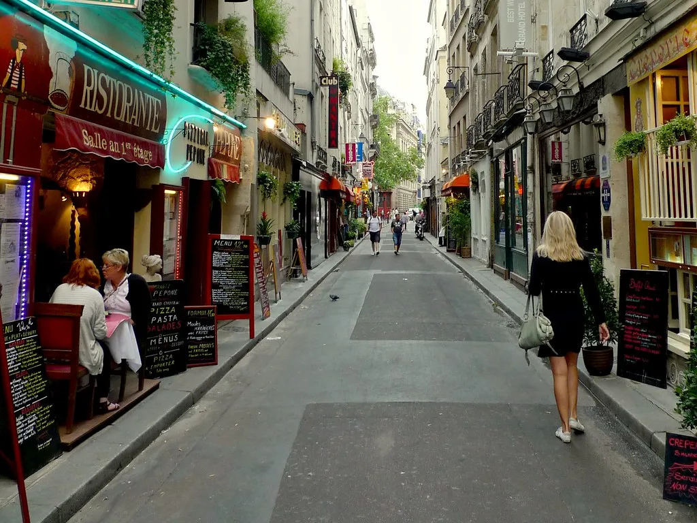
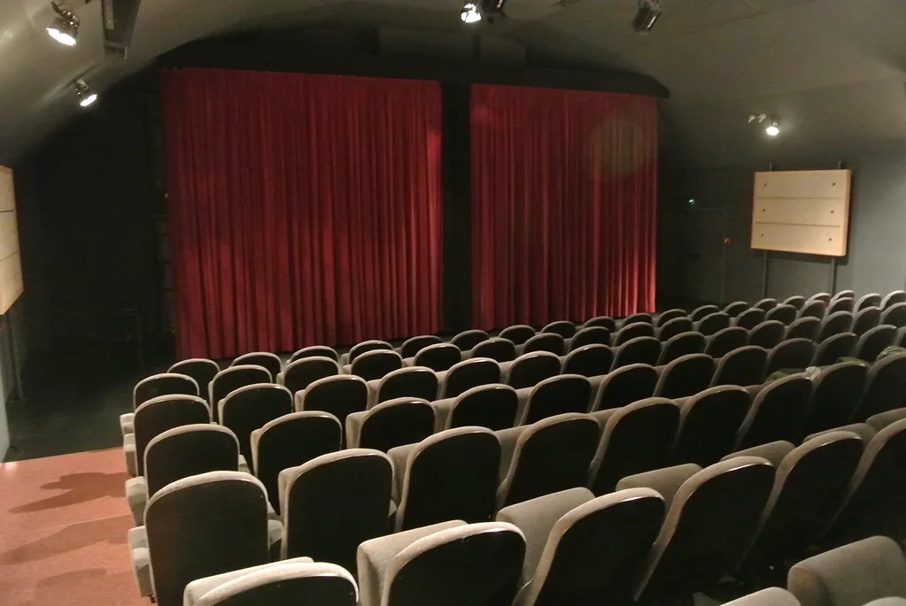

이재명 대통령, 마크롱과 '뤼미에르 서밋' 공동주재…"K콘텐츠, 유럽으로"
이재명 대통령이 7일(현지시간) 프랑스 남부 생폴드방스에서 열린 국제 영화·영상 정상회의 '뤼미에르 서밋'에 에마뉘엘 마크롱 프랑스 대통령과 함께 공동 의장 자격으로 참석했다. 6일부터 9일까지 이어지는 프랑스 국빈방문의 첫 공식 일정으로, 대통령실은 이번 서밋 참석이 글로벌 콘텐츠 산업의 미래 논의를 주도하고 한국 콘텐츠의 유럽 시장 진출 기반을 넓히는 계기가 될 것으로 기대한다고 밝혔다.
뤼미에르 서밋에는 세계 30여 개국에서 영화·방송·영상·게임 산업의 주요 경영진과 정책 결정자, 정치 지도자, 문화예술계 인사 등 약 150명이 모였다. 참석자들은 온라인 동영상 서비스(OTT) 확산과 인공지능(AI) 기술 도입으로 빠르게 바뀌는 글로벌 영상산업의 지형, 창작 생태계의 지속 가능성, 콘텐츠 산업의 경쟁력 강화 방안 등을 폭넓게 논의할 예정이다. 서밋의 명칭은 영화의 아버지로 불리는 프랑스 뤼미에르 형제에서 따왔다.

한국 정상이 프랑스 정상과 나란히 공동 의장을 맡은 것은 최근 몇 년 사이 크게 높아진 K콘텐츠의 국제적 위상을 반영한다. 드라마와 영화, 음악, 웹툰이 세계 시장에서 흥행하면서 한국은 콘텐츠 수출국으로 자리 잡았고, 프랑스는 '문화 다양성'을 앞세워 자국 영상산업을 보호해 온 대표적인 나라다. 두 나라는 거대 플랫폼 중심으로 재편되는 시장에서 창작자에 대한 공정한 보상과 제작 기반 유지라는 공통의 고민을 안고 있다.
특히 생성형 AI가 대본 작성과 영상 제작에 빠르게 스며들면서, 저작권과 창작자 권리 보호를 둘러싼 국제 규범 논의가 시급한 과제로 떠올랐다. 프랑스는 유럽연합(EU) 내에서 콘텐츠 규제와 지원 제도를 주도해 온 만큼, 한국이 이 논의의 초기 단계에 참여하는 것은 향후 글로벌 표준 형성 과정에서 발언권을 확보하는 의미가 있다는 평가가 나온다.
이번 방문 기간에는 파리에서 'K콘텐츠 슈퍼위크' 관련 행사도 함께 열린다. 정부는 유럽을 한국 콘텐츠의 새로운 소비·협력 시장으로 보고, 공동제작과 투자 유치, 현지 유통망 확대를 뒷받침하는 정책적 접점을 넓히려 하고 있다. 문화 분야 협력은 제조업·첨단산업 중심이던 양국 경제 관계를 서비스·지식재산 영역으로 확장한다는 의미도 있다.

이 대통령은 7일 생폴드방스 일정을 마친 뒤 8일부터 9일까지 파리에서 국빈 양자 방문 일정을 이어간다. 마크롱 대통령과의 정상회담에서는 안보와 경제, 과학기술, 문화, 인적 교류 등 전방위 협력 방안이 논의된다. 정부는 지난해 격상된 양국의 '글로벌 전략적 동반자 관계'를 구체적 사업으로 채워 내실을 다진다는 방침이다.
이 대통령은 출국에 앞서 네팔 대홍수로 실종된 한국인 관련 상황을 계속 보고받으며 필요한 조치를 챙기겠다고 밝혔다. 국내에서는 정기국회 개회와 6개 부처 장관 후보자 인사청문 정국이 맞물려 있어, 순방 성과가 국정 동력에 어떻게 이어질지도 관심사다. 문화·콘텐츠 협력은 성과를 수치로 보여 주기 어렵다는 점에서, 이번 방문의 실질적 결과는 공동제작 협정이나 인력 교류 프로그램, 상호 투자 약속 같은 구체적 형태로 확인될 필요가 있다는 지적도 나온다. 방문 기간 발표될 양국 정상 공동성명과 부속 문서에 문화 분야가 어느 정도 비중으로 담길지가 관전 포인트로 꼽힌다.